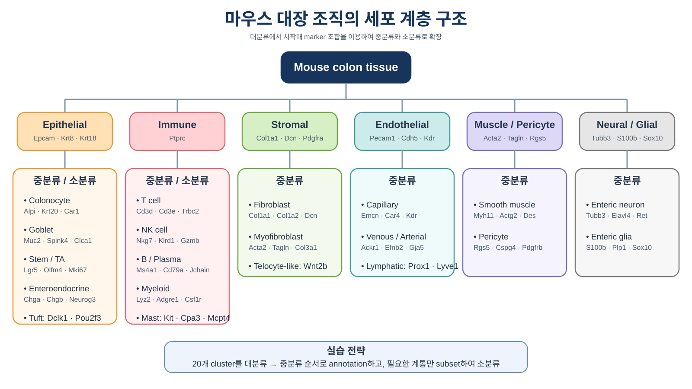

Resolution 0.5에서 생성된 20개 cluster의 marker gene을 확인하고, 마우스 대장 조직의 세포 구성을 기준으로 대분류 → 중분류 → 소분류 순서로 biological identity를 부여합니다.
마우스 대장은 epithelial layer, lamina propria의 immune·stromal compartment, 혈관과 림프관, muscular layer 및 enteric nervous system으로 구성됩니다. Annotation에서는 처음부터 세부 subtype을 맞히려고 하기보다, 먼저 명확한 계통 marker를 이용해 대분류한 다음 각 계통 내부를 다시 세분화하는 것이 안정적입니다.

마우스 대장 조직의 주요 세포 계통과 대표 marker를 정리한 실습용 계층 구조
Step 5 마지막에서 resolution 0.5 cluster를 identity로 지정하고
RNA assay로 전환했습니다. 현재 객체는 기존 Assay 클래스이므로
JoinLayers()는 실행하지 않습니다.
library(Seurat)
library(dplyr)
library(ggplot2)
library(patchwork)
# 저장된 cluster를 identity로 지정
Idents(integrated_obj) <- "seurat_clusters"
# marker 발현 분석은 RNA assay에서 수행
DefaultAssay(integrated_obj) <- "RNA"
# 시작 상태 확인
integrated_obj
levels(integrated_obj)
class(integrated_obj[["RNA"]])
Layers(integrated_obj[["RNA"]])
table(Idents(integrated_obj))
FindAllMarkers()는 각 cluster와 나머지 세포를 비교하여
해당 cluster에서 상대적으로 높게 발현되는 유전자를 찾습니다.
세포 수가 많으므로 실습 시간을 줄이기 위해 cluster당 최대 1,000개 세포를 사용합니다.
set.seed(1234)
all_markers <- FindAllMarkers(
integrated_obj,
assay = "RNA",
only.pos = TRUE,
test.use = "wilcox",
min.pct = 0.25,
logfc.threshold = 0.25,
max.cells.per.ident = 1000,
random.seed = 1234
)
dim(all_markers)
head(all_markers)
all_markers.csv로 저장하면,
실습에서는 아래처럼 바로 불러올 수 있습니다.
# 계산 결과 저장
write.csv(
all_markers,
file = "all_markers.csv",
row.names = FALSE
)
# 저장된 결과를 사용할 때
all_markers <- read.csv(
"all_markers.csv",
check.names = FALSE
)
top10_markers <- all_markers |>
group_by(cluster) |>
slice_max(
order_by = avg_log2FC,
n = 10,
with_ties = FALSE
) |>
ungroup()
top10_markers |>
select(
cluster,
gene,
avg_log2FC,
pct.1,
pct.2,
p_val_adj
)
avg_log2FC가 크고 pct.1이 높으면서 pct.2가 낮은 유전자는
해당 cluster를 설명하는 데 유용합니다. 하지만 ribosomal, mitochondrial, cell-cycle 및
stress gene만 높은 경우에는 세포 정체성보다 상태 또는 QC 영향을 반영할 수 있습니다.
| 대분류 | 대표 positive marker | 해석 시 참고 |
|---|---|---|
| Epithelial | Epcam, Krt8, Krt18, Krt19 | Colonocyte, goblet, stem/TA 등으로 세분화 |
| Immune | Ptprc | T/NK, B/plasma, myeloid, mast로 세분화 |
| Stromal | Col1a1, Col1a2, Dcn, Pdgfra | Fibroblast와 myofibroblast 확인 |
| Endothelial | Pecam1, Cdh5, Kdr, Esam | Blood 및 lymphatic endothelial 확인 |
| Muscle/Pericyte | Acta2, Tagln, Myh11, Rgs5, Pdgfrb | Smooth muscle과 pericyte 구분 |
| Neural/Glial | Tubb3, Elavl4, S100b, Plp1, Sox10 | 희귀할 수 있으므로 여러 marker 조합 확인 |
major_marker_list <- list(
Epithelial = c("Epcam", "Krt8", "Krt18", "Krt19"),
Immune = c("Ptprc"),
Stromal = c("Col1a1", "Col1a2", "Dcn", "Pdgfra"),
Endothelial = c("Pecam1", "Cdh5", "Kdr", "Esam"),
Muscle_Pericyte = c("Acta2", "Tagln", "Myh11", "Rgs5", "Pdgfrb"),
Neural_Glial = c("Tubb3", "Elavl4", "S100b", "Plp1", "Sox10")
)
DotPlot(
integrated_obj,
features = major_marker_list,
group.by = "seurat_clusters",
assay = "RNA"
) +
RotatedAxis() +
ggtitle("Major lineage markers")
Dot size는 해당 cluster에서 marker가 발현되는 세포 비율, 색은 평균 발현량을 나타냅니다. 하나의 유전자만 보지 말고 같은 계통의 여러 marker가 동시에 일관되게 나타나는지 확인합니다.
FeaturePlot(
integrated_obj,
features = c(
"Epcam",
"Ptprc",
"Col1a1",
"Pecam1",
"Acta2",
"S100b"
),
reduction = "umap",
ncol = 3,
order = TRUE
)
Marker 결과를 확인한 뒤 cluster 번호별 대분류를 직접 입력합니다.
아래 코드는 실습용 template이므로 Unassigned를 실제 판정 결과로 수정해야 합니다.
cluster_ids <- levels(Idents(integrated_obj))
major_cluster_map <- setNames(
rep("Unassigned", length(cluster_ids)),
cluster_ids
)
# 아래는 marker 결과를 확인한 뒤 직접 입력
# 예시:
# major_cluster_map[c("0", "3", "4")] <- "Epithelial"
# major_cluster_map[c("2", "11", "12")] <- "Immune"
# major_cluster_map[c("1", "5")] <- "Stromal"
major_cluster_map
integrated_obj$celltype_major <- unname(
major_cluster_map[
as.character(Idents(integrated_obj))
]
)
table(
cluster = integrated_obj$seurat_clusters,
major = integrated_obj$celltype_major
)
DimPlot(
integrated_obj,
reduction = "umap",
group.by = "celltype_major",
label = TRUE,
repel = TRUE
)
immune_marker_list <- list(
T_cell = c("Cd3d", "Cd3e", "Trbc1", "Trbc2"),
NK_cell = c("Nkg7", "Klrd1", "Gzmb", "Prf1"),
B_cell = c("Ms4a1", "Cd79a", "Cd74", "H2-Aa"),
Plasma_cell = c("Jchain", "Mzb1", "Sdc1", "Xbp1"),
Myeloid = c("Lyz2", "Csf1r", "Adgre1", "Fcgr3"),
Neutrophil = c("S100a8", "S100a9", "Ly6g", "Csf3r"),
Mast_cell = c("Kit", "Cpa3", "Mcpt4", "Ms4a2")
)
DotPlot(
integrated_obj,
features = immune_marker_list,
group.by = "seurat_clusters",
assay = "RNA"
) +
RotatedAxis() +
ggtitle("Immune lineage markers")
epithelial_marker_list <- list(
Colonocyte = c("Alpi", "Krt20", "Car1", "Slc26a3"),
Goblet = c("Muc2", "Spink4", "Clca1", "Agr2"),
Stem = c("Lgr5", "Olfm4", "Smoc2", "Ascl2"),
Cycling_TA = c("Mki67", "Top2a", "Birc5", "Ccna2"),
Enteroendocrine = c("Chga", "Chgb", "Neurog3", "Pyy"),
Tuft = c("Dclk1", "Pou2f3", "Trpm5", "Gfi1b")
)
DotPlot(
integrated_obj,
features = epithelial_marker_list,
group.by = "seurat_clusters",
assay = "RNA"
) +
RotatedAxis() +
ggtitle("Epithelial lineage markers")
stromal_marker_list <- list(
Fibroblast = c("Col1a1", "Col1a2", "Dcn", "Pdgfra"),
Myofibroblast = c("Acta2", "Tagln", "Col3a1", "Cald1"),
Smooth_muscle = c("Myh11", "Actg2", "Des", "Cnn1"),
Pericyte = c("Rgs5", "Cspg4", "Pdgfrb", "Mcam"),
Endothelial = c("Pecam1", "Cdh5", "Kdr", "Emcn"),
Lymphatic_endothelial = c("Prox1", "Lyve1", "Flt4", "Pdpn")
)
DotPlot(
integrated_obj,
features = stromal_marker_list,
group.by = "seurat_clusters",
assay = "RNA"
) +
RotatedAxis() +
ggtitle("Stromal and vascular markers")
전체 20개 cluster에서 모든 세부 subtype을 동시에 구분하기보다, 대분류가 확정된 cluster 안에서 해당 계통 marker를 집중적으로 확인합니다. 더 세밀한 소분류가 필요하면 immune 또는 epithelial cell만 subset하여 variable feature 선택부터 clustering까지 다시 수행합니다.
medium_cluster_map <- setNames(
rep("Unassigned", length(cluster_ids)),
cluster_ids
)
# Marker 결과에 따라 직접 입력
# 예시:
# medium_cluster_map[c("0", "3")] <- "Colonocyte"
# medium_cluster_map[c("2")] <- "T_cell"
# medium_cluster_map[c("11")] <- "B_cell"
integrated_obj$celltype_medium <- unname(
medium_cluster_map[
as.character(Idents(integrated_obj))
]
)
table(
cluster = integrated_obj$seurat_clusters,
medium = integrated_obj$celltype_medium
)
p_major <- DimPlot(
integrated_obj,
reduction = "umap",
group.by = "celltype_major",
label = TRUE,
repel = TRUE
) + ggtitle("Major cell classes")
p_medium <- DimPlot(
integrated_obj,
reduction = "umap",
group.by = "celltype_medium",
label = TRUE,
repel = TRUE
) + ggtitle("Intermediate cell types")
p_major + p_medium
SingleR를 사용할 경우 사람 reference가 아니라 마우스 reference를 사용해야 합니다. Reference 결과는 broad identity를 보조하는 자료이며, colon tumor context와 수동 marker 확인을 대체하지 않습니다.
# 최초 1회 설치
# BiocManager::install(c(
# "SingleR",
# "celldex",
# "SingleCellExperiment"
# ))
library(SingleR)
library(celldex)
library(SingleCellExperiment)
mouse_ref <- MouseRNAseqData()
sce <- as.SingleCellExperiment(
integrated_obj,
assay = "RNA"
)
singleR_cluster <- SingleR(
test = sce,
ref = mouse_ref,
labels = mouse_ref$label.main,
clusters = integrated_obj$seurat_clusters
)
singleR_cluster$labels
# metadata 확인
head(
integrated_obj@meta.data[
,
c(
"orig.ident",
"condition",
"seurat_clusters",
"celltype_major",
"celltype_medium"
)
]
)
# annotation 결과 객체 저장
saveRDS(
integrated_obj,
file = "integrated_obj_annotated.rds",
compress = FALSE
)
# 저장 확인
file.exists(
"integrated_obj_annotated.rds"
)